Построение изохрон
Изохроны, как следует из их названия, - это линии равного времени, то есть они показывают области, которых можно достигнуть в течение заданного временного промежутка.
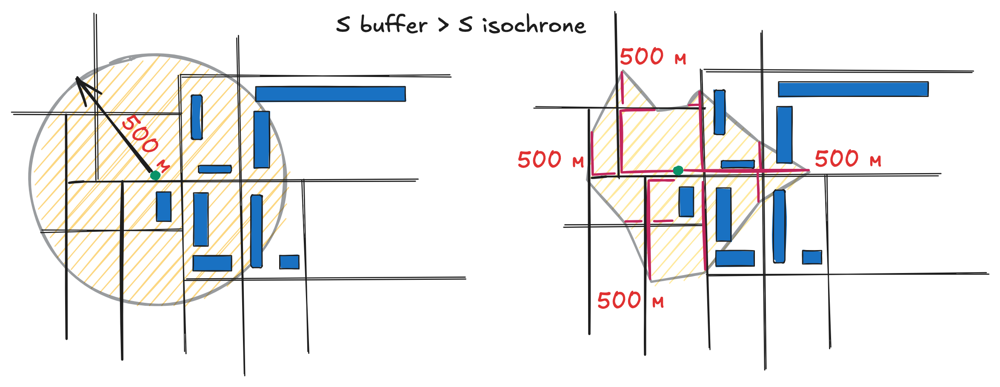
Изохроны, как правило, применяются для оценки доступности объектов.
Построение изохрон относится к задачам сетевого анализа и построено на теории графов.
Использование стандартных инструментов
Для сетевого анализа в Панели инструментов анализа есть отдельный пункт.
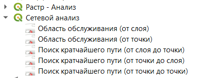
Основные инструменты здесь - это Область обслуживания и Поиск кратчайшего пути.
За построение изохрон здесь отвечает Область обслуживания.
Доступно два варианта построения области обслуживания: от слоя (то есть от объектов точечного слоя) и от точки (то есть от одной заданной пользователем точки).
При построении области обслуживания от слоя самыми важными характеристиками являются:
слой, отображающий улично-дорожную сеть;
слой, содержащий точечные объекты, для которых строится область обслуживания (могут использоваться не все объекты слоя, а только выделенные);
travel cost - расстояние или время для определения области обслуживания. Расстояние задается, если выбран кратчайший путь, время (в часах), если выбран наиболее быстрый путь.
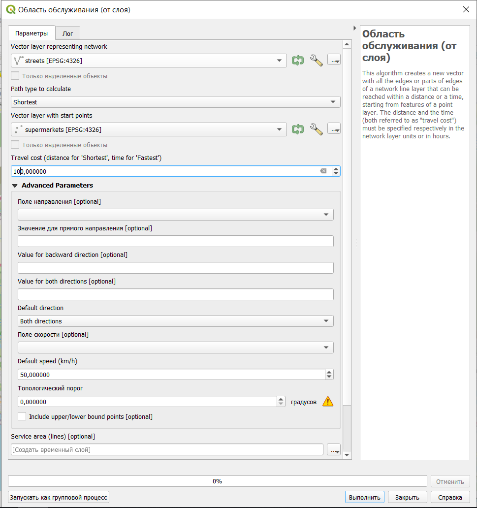
Будьте внимательны: время нужно указывать в часах, а расстояние - в единицах измерения системы координат вашего слоя улично-дорожной сети.
В качестве дополнительных параметров могут быть заданы:
поле направления - поле, в котором указано, в каком направлении можно передвигаться по определенному сегменту (в случае, если есть информация о том, какие улицы являются одно- или двухсторонними и в каком направлении по ним можно передвигаться);
значение для прямого направления, для обратного направления и для обоих направлений - какие значения в этом поле соответствуют каким направлениям;
направление по умолчанию - если граф является направленным и по нему можно передвигаться только в одном из направлений (по умолчанию по графу можно передвигаться в обоих направлениях);
поле скорости - поле, в котором указана скорость передвижения по конкретным сегментам сети;
скорость по умолчанию - скорость, с которой можно передвигаться по сети, если не задано поле скорости со значениями для каждого сегмента.
В результате выполнения могут быть получены два варианта результата: слой с линиями, в который входят сегменты сети, попадающие в область обслуживания, и слой с узлами, в который включаются все узлы сети, попадающие в область обслуживания и узлы, показывающие крайние точки области обслуживания (по умолчанию этот слой пропускается).
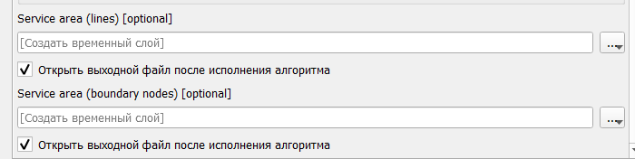
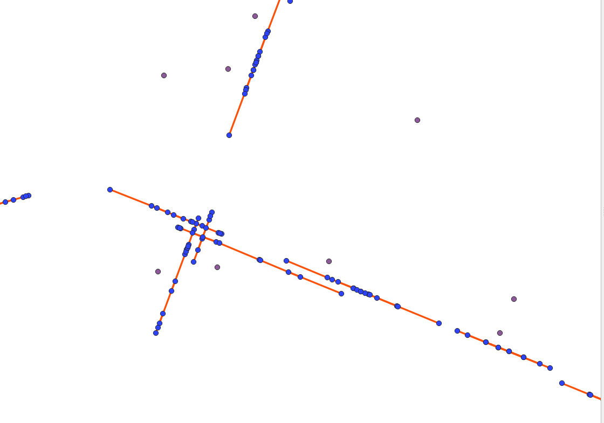
Область обслуживания для точки рассчитывается аналогично за исключением того, что вместо слоя нужно указать положение исходной точки. Это можно сделать введя ее координаты или просто указав на карте.
Использование модуля QNEAT3
Один из плагинов, который использует для сетевого анализа задаваемый пользователем граф улично-дорожной сети - это плагин QNEAT3 - QGIS network analysis toolbox. После установки плагина он должен появиться в панели инструментов анализа.
Основные функции этого плагина:
построение матриц времени - origin-destination matrix;
построение изохрон в нескольких вариациях;
поиск кратчайшего пути между точками.
Построение изохрон в плагине QNEAT3 возможно в нескольких вариациях от одной точки или от объектов точечного слоя:
линии равного расстояния (равного времени);
поверхность интерполяции времени или расстояния;
облако точек с характеристиками времения или расстояния;
полигональные объекты.
К сожалению, на данный момент в последних версиях программы функция построения изохрон не работает.
Если у вас более ранняя версия, то возможно модуль у вас будет работать корректно.
Для корректной работы алгоритмов расчета изохрон в этом плагине рекомендуется применять только плоские прямоугольные системы координат (системы координат с единицами измерений в метрах), поэтому исходные слои нужно перепроецировать в такую систему координат.
Дальнейшие расчеты изохрон следует уже делать с использованием перепроецированного слоя улично-дорожной сети.
Построение изохрон от одной точки и от объектов точечного слоя отличается только параметрами на входе и получаемым в результате количеством изохрон, поэтому далее будет рассмотрено построение изохрон от одной точки. Исходная точка может задаваться либо просто кликом на карте, либо ее можно задать по координатам.
При построении изохрон в виде линий равного расстояния или времени нужно задать:
слой улично-дорожной сети;
стартовую точку;
размер области, в пределах которой осуществляется расчет (расстояние или время в зависимости от критерия оптимизации);
интервал между линиями;
размер ячейки растра, получаемого в результате интерполяции;
критерий оптимизации
кратчайшее расстояние - оптимизация по расстоянию, в этом случае размер области и интервала задается в единицах измерения системы координат слоя;
наиболее быстрый путь - оптимизация по времени, в этом случае размер области и интервал задается в секундах.
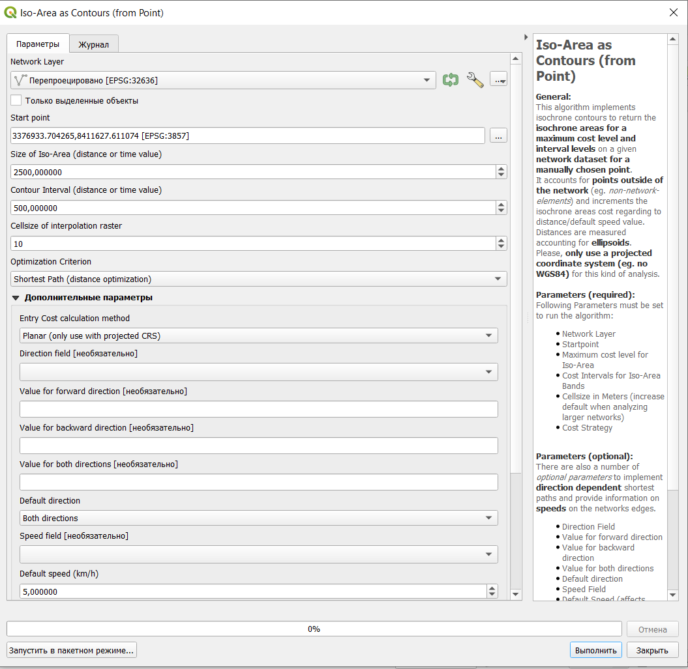
Остальные параметры являются дополнительными и аналогичны рассмотренным выше.
Результатом расчета в этом случае будет являться два новых слоя: растр с результатами интерполяции и слой с контурами равного расстояния или времени (в зависимости от выбранного критерия оптимизации).
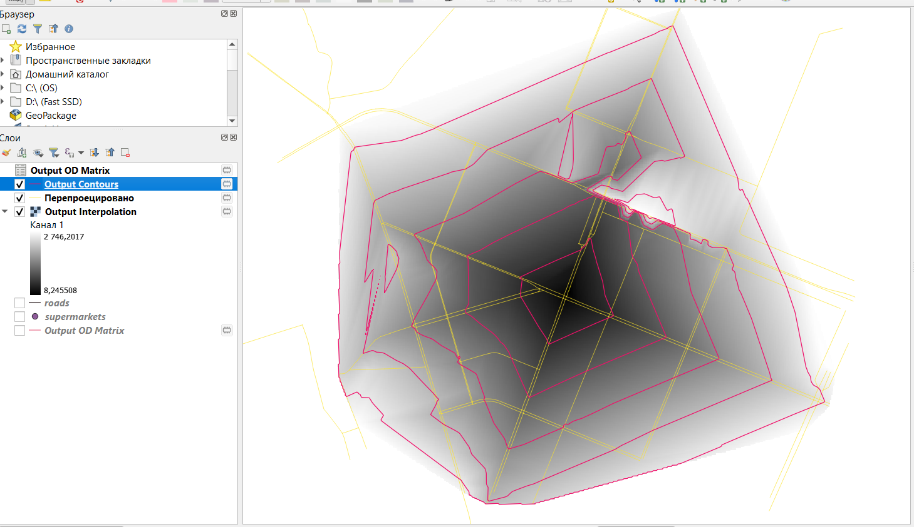
В центре полученного растра и контуров находится исходная точка.
Результирующий растр показывает более сглаженные промежуточные значения, которые получаются на основе интерполяции значений между контурами.
Такой же растр получается при расчета изохрон только в виде растровой поверхности (Iso-area as interpolation).
Построение изохрон как облака точек по параметрам аналогично рассмотреному выше построению в виде линий равного времени или расстояния с небольшими исключениями: здесь указывается только общий размер области, а также можно выбрать метод расчета расстояния (по эллипсоиду или на плоскости).
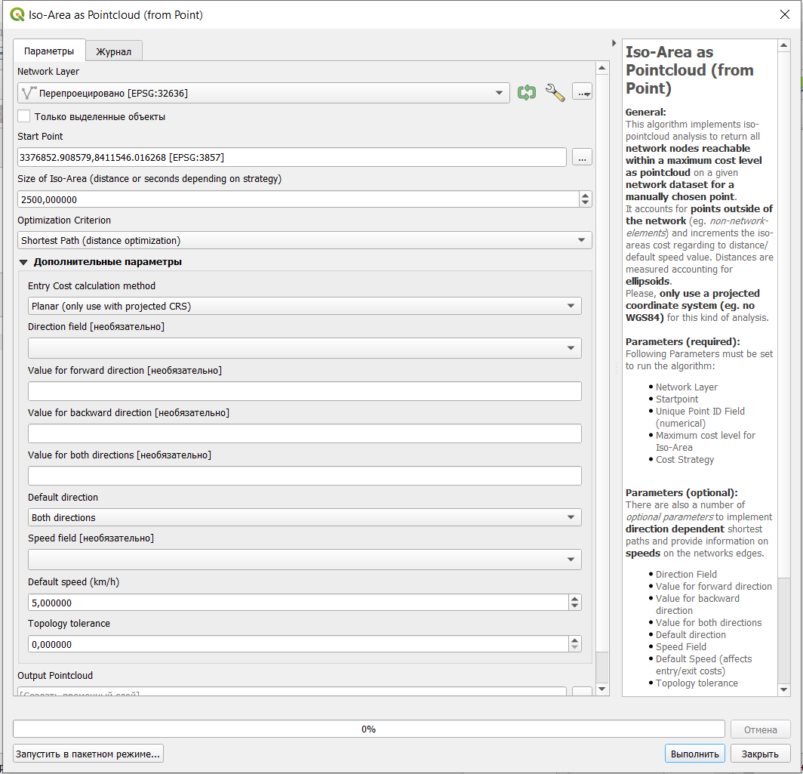
В результате получается слой, содержащий в себе все узлы улично-дорожной сети, каждому из которых присвоен атрибут расстояния (или времени в зависимости от параметра оптимизации).
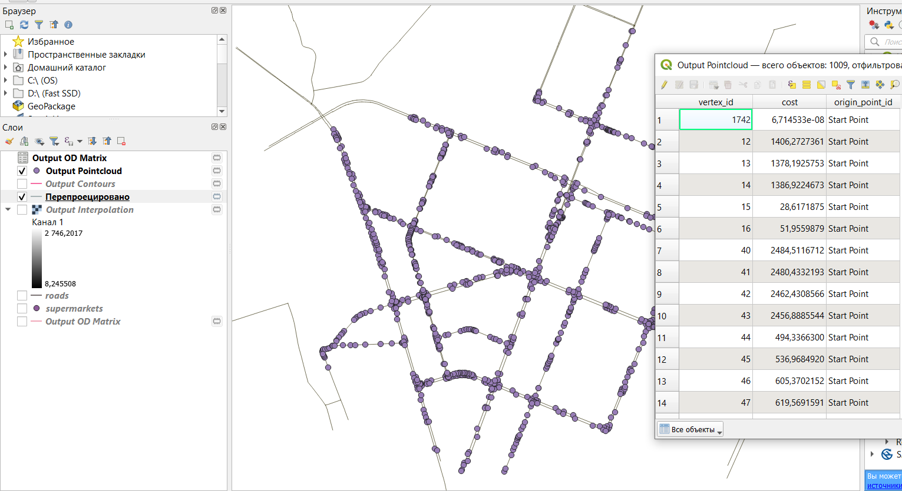
Построение изохрон в виде полигональных объектов аналогично построению изохрон в виде линий равного времени/расстояния, только в результате вами будут получены не линейные объекты, а площадные со значениями времени или расстояния (в зависимости от выбранного критерия оптимизации).
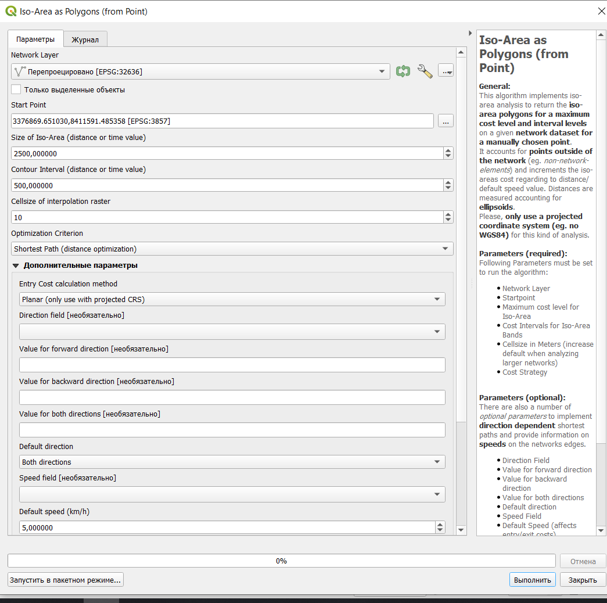
В результате как и при построении изохрон в виде линий равного времени/расстояния получается два слоя: растровый слой с результатами интерполяции и векторный слой с полигональными объектами.
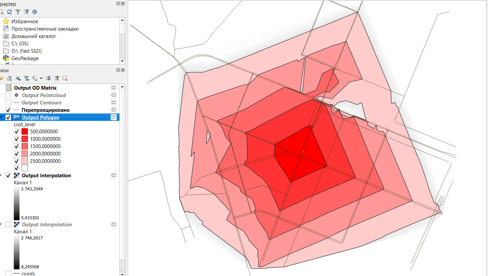
Использование сервиса OpenRouteService
Страница сервиса с документацией: https://openrouteservice.org/
OpenRouteService - это бесплатный сервис на основе OSM, который позволяет решать некоторые задачи сетевого анализа, в том числе строить изохроны.
Работает этот сервис через API (Application Programming Interface) — это контракт, который предоставляет программа. «Ко мне можно обращаться так и так, я обязуюсь делать то и это»1.
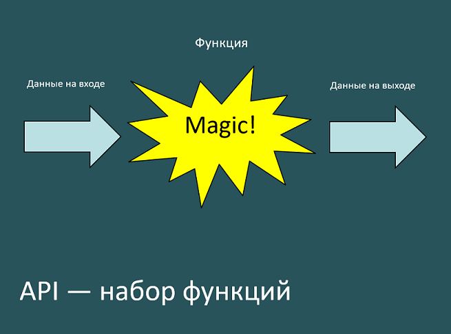
Для работы с ним вам нужно установить модуль ORS tools.
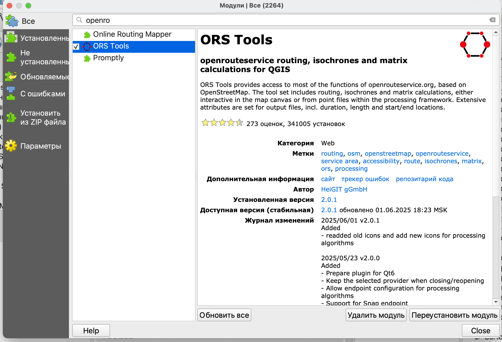
Этот модуль должен будет появиться у вас в панели инструментов в виде значка
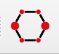
.Перед тем, как начать работу с сервисом, вам в настройках модуля необходимо прописать ваш личный API ключ, по которому программа будет опознавать вас как пользователся и осуществлять необходимые операции.
Для получения ключа вам нужно зарегистрироваться на сайте https://openrouteservice.org/ и в своем личном кабинете найти этот ключ. Его необходимо скопировать.
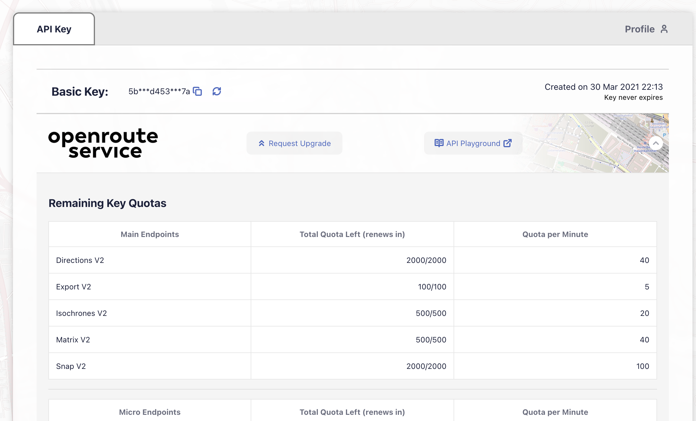
Далее нужно открыть модуль и настройки провайдера по кнопке .
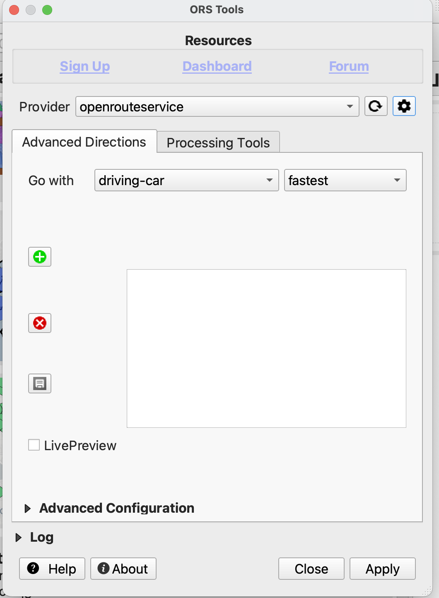
В настройках нужно вставить ваш ключ в строку API key и сохранить их.
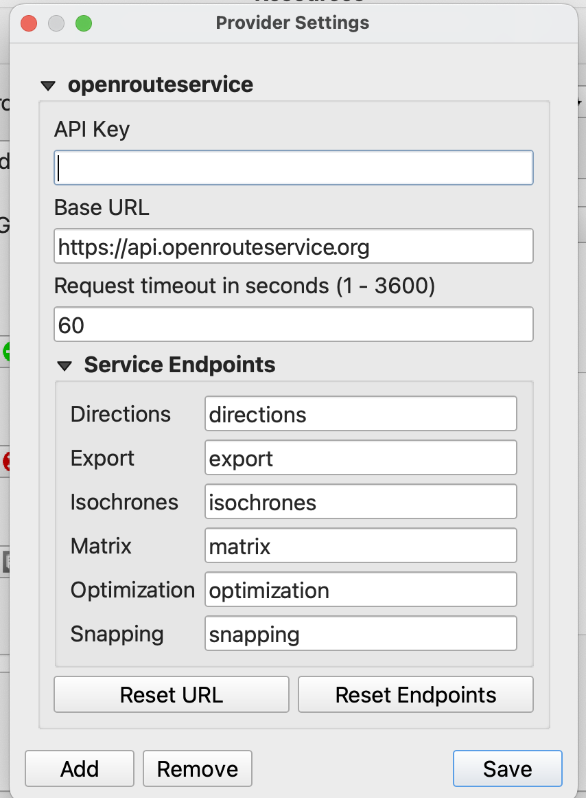
После настройки доступа к сервису вы можете перейти во вкладку Processing tools, из которой можно запустить процесс создания изохрон.
Изохроны здесь могут быть созданы в двух вариантах: из одной точки или из точечного слоя.
В качестве параметров построения вы можете указать:
travel mode - способ передвижения;
input point/layer - исходная точка или исходный точечный слой;
dimension - рассчитываемый параметр (время или расстояние);
comma-separated ranges - интервалы для построения изохрон: время в минутах или расстояние в метрах (зависит от рассчитываемого параметра);
location type - тип точки: исходная или конечная.
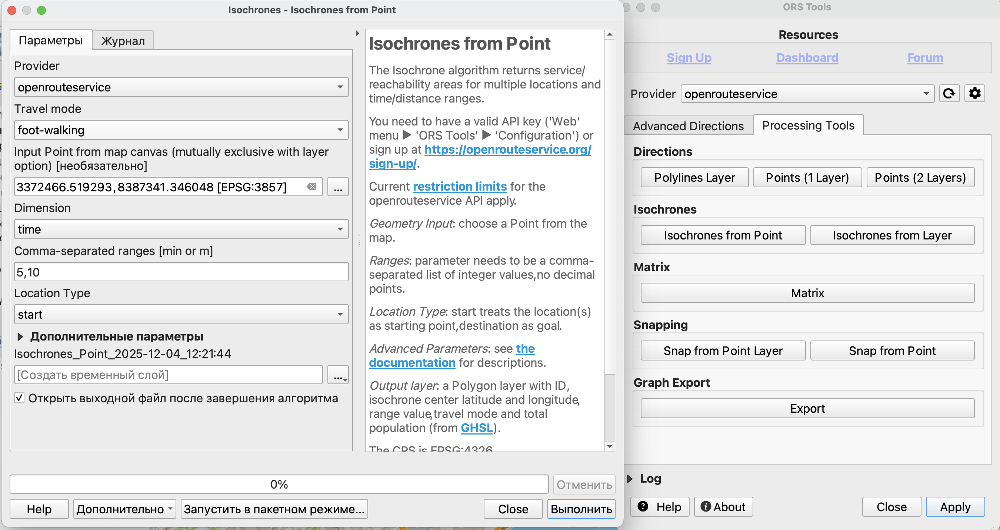
В качестве результата вы получите полигоны изохрон.
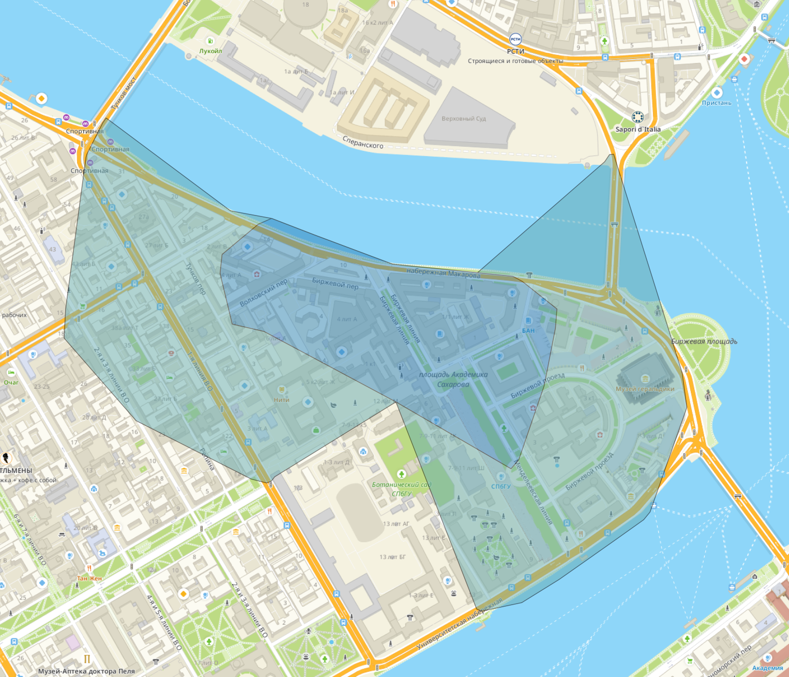
Недостатком использования подобных сервисов является то, что вы не знаете точно, какой именно граф улично-дорожной сети применяется в качестве исходного для расчета.
Сноски
Что такое API https://habr.com/ru/articles/464261/↩︎